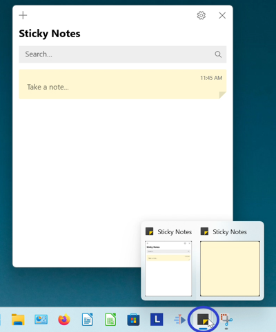

How to Move the Microsoft Sticky Notes App (Windows 11)
This tutorial covers:
- How to Move the Sticky Notes App Window With Mouse
- How to Move the Sticky Notes App Window With Menu
No time to scroll down? Click through this presentation tutorial:
Follow along with a tutorial video:
How to Move the Sticky Notes App Window With Mouse
- Step 1: First open the Sticky Notes app. At the top of the window, click, hold, and drag to move the window. Release the mouse to stop moving the window.

How to Move the Sticky Notes App Window With Menu
- Step 1: Open the Sticky Notes app. Go down to the taskbar and hover the mouse over the Sticky Notes app icon. 
- Step 2: Two small windows appear; one is the Notes List and the other is the sticky note. Right click one of the windows.
- Step 3: In the menu that opens, click “Move”.

- Step 4: Click, hold, and drag the four arrows cursor at the top of the Notes List or sticky note window to move it. Release the mouse to stop moving the window.
Save a copy of these instructions with this free PDF tutorial.